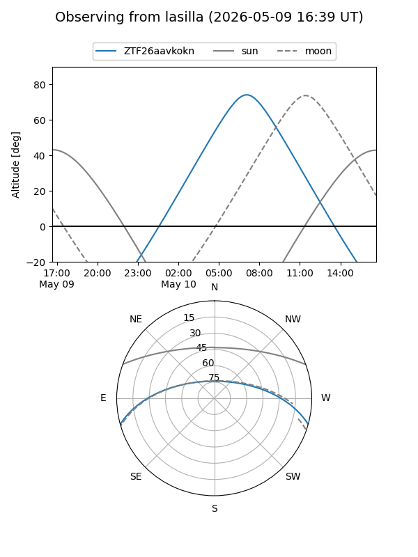
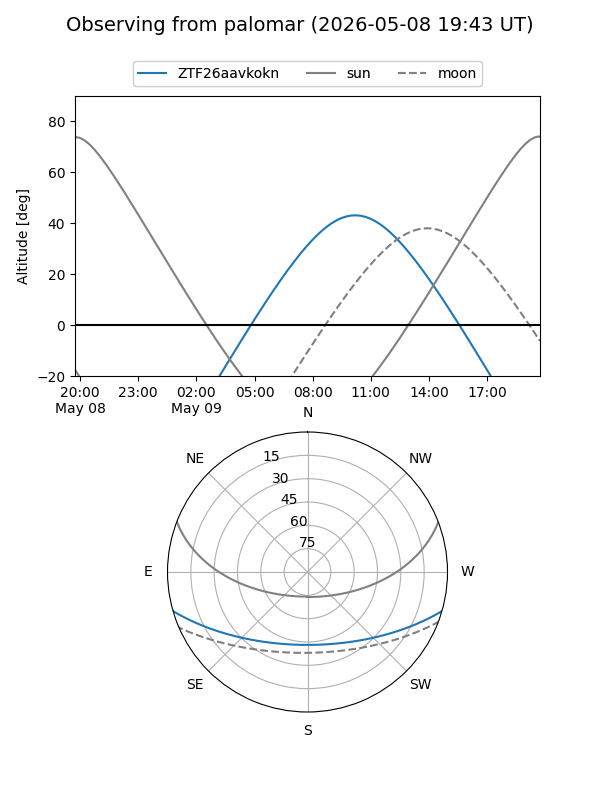
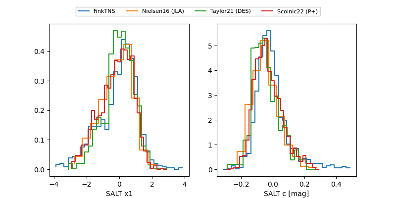

ZTF26aavkokn
Target ZTF26aavkokn at 2026-05-09 10:49
Aliases and brokers:
FINK: link
Lasair: link
ALeRCE: link
alt names
ZTF26aavkokn (ztf,fink_ztf)
Coordinates:
equatorial (ra, dec) = 262.8824,-13.48730
equatorial (HMS+DMS) = 17:31:31.78,-13:29:14.29
galactic (l, b) = (11.4829,+10.91336)
Flags:
Photometry:
last ztfg=19.02
1 ztfg detections
Lightcurve
Visibility


Additional plots
